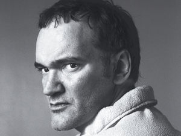

Quentin Tarantino
 De: La Frikipedia, la enciclopedia extremadamente seria.
De: La Frikipedia, la enciclopedia extremadamente seria.
De la serie grandes personajes:
¡La siguiente victima eres
tú!
| Nacimiento
|
Si
|
| Muerte
|
Muere al final de la peli de Kill Bill (spoiler)
|
| Ocupación
|
Pluriempleado de la industria del cine
|
| Nacionalidad
|

|
| Malo o bueno
|
Depende de como tenga el cable (Si esta cruzado prepárate para lo peor)
|
| Atentados contra la humanidad
|
Producir Hostel
|
| Religión
|
Tarantinismo
|
| Notas
|
Manténgase fuera del alcance de los niños
|
«Tarantino» redirige aquí. Para otras acepciones, véase Tarantino (desambiguación).
«No sé Quien es»
~ Vístol el de Montcada i Reixac sobre Quentin Tarantino
«Todo un genio»
~ Satán sobre Quentin Tarantino
«¡¡¡Donad sangre, la necesito!!!»
~ Quentin Tarántula haciéndo los preparativos para una de sus películas.
Quentin Tarantinto es un actor, director, productor, y la de dios de cosas más que predica, ante todo la paz y la no violencia.
Tarantino con su cámara, grabando sus brutalidades
Su vida
Infancia
El pequeño Quentin nació en el típico pueblo de los Estados Juntitos de America en un pequeño rancho. Quentin era el típico niño que se dedicaba a cazar moscas para torturarlas quitandole las alas una a una para luego acabar con ella lenta y dolorosamente. Tras los brutales asesinatos de moscas Quentin relataba todo lo sucedido en un diario, contando la agonía sufrida por la mosca. En cuanto se aburrió de las moscas comenzó a cazar otros insectos. Cuando comenzó al colegio, Quentin empezó a maltratar a sus compañeros de clase de forma brutal mientras lo grababa en video con una cámara. Esto le valdría como inspiración de escenas, como la escena en Reservoir Dogs en la que el Señor Rubio le corta el pene una oreja a un policía.
Juventud

A Tarantino le gusta más la sangre que a un tonto un lápiz
Su afición por la películas completas con los guiones que escribía. Una vez que comenzó a escribir y a rodar se volvió tal y como lo conocemos ahora: Como un colgao del 15. En su juventud descubrió algo que marcaría el resto de su vida: Los porros y el alcohol. Sus guiones se tornaron más subrealistas. Tras algunas pelis de mierda salta a la fama y se convierte en un director de prestigio dentro de su mundillo.
Quentin hoy en día
Quentin sigue grabando películas pero hoy en día se dedica más a la filosofía. También produce películas a otros directores que podemos considerar sus aprendices, ya que Tarantino no produce ninguna película que no tenga al menos 50 litros de sangre. También es miembro de la Cruz Roja, donando sangre que posteriormente utiliza para sus películas.
Su obra
La obra de Tarantino no es muy extensa. De todos modos sus películas mas famosas son las siguientes:
Protagonista de Pulp Fiction
 Quentin Tarantino excitado.
- Reservoir Dogs: Un grupo de homosexuales dispuestos a darse placer mutuo. Viene precedido de muchos tiros y mucha sangre.
- Pulp Fiction: la traducion es español es "El Pulpo Fantástico". Trata de la vida de un pulpo que hace el bien por la comunidad de pulpos del fondo del mar, hasta que unos pescadores lo pescan, lo torturan, lo matan, sale mucha tinta, y lo convierten en pulpo a la gallega. En este momento todos os preguntareis, ¿Pero en esta película no hay sangre? En realidad todos los pulpos se revelan contra los humanos acabando con todos ellos tras mucha sangre en la pantalla. Es considerada la obra maestra de Tarantino.
- Jackie Brown: Jackie, una mujer de mediana edad, se despierta un día y todo es marrón: ella, su casa, los vecinos... incluso sus propios pedos son marrones.
- Four Rooms: Cuatro habitaciones donde se cometen torturas y muertes lentas y dolorosas.
- Kill Bill: Una churri a la que le pegan una paliza. Solo tiene una misión en la vida: sacar sangre a todo bicho que se mueva.
- Death Proof: Titulada en español "La muerte de un pedo". Cuenta la vida de un pedo desde que nace en el intestino grueso hasta que muere saliendo por el ojete.
- Bastardos sin gloria: Unos Brad Pitt
- Django Unchained: Trata sobre un DJ al que no le gustan nada los macarrones, pero un día ve a una paloma adaptar la forma de una escalera y decide mata 20 gordos esquizofrenicos (no lo son pero su mejor amigo cree que si) por que su tía no le quiso regalar un lapicero de ultima generación (cual tiene un botón que al apretarlo se transforma en un coche con forma de Tyrannosaurus Rex) a ese tipo de la esquina que nadie conoce, ni siquiera el protagonista de la película. Al final el prota decide dedicarse a fabricar palillos para urgarse los dientes, pero se encuentra por el suelo un globo de color azul con mensajes subliminales y se disfraza de moneda para el resto de su vida creyendo que así encontrara la salvación para el pasaje del mas aya.
Colaboraciones
La regla según Quentin Tarantino
Se sabe de sus colaboraciones en el mundo del cine y la televisión. Entre ellas podemos destacar:
- Abierto hasta el amanecer: Película que realizó con Robert Rodriguez, su compañero del alma. El guión fue escrito después de fumar 60 porros cada uno y mucho alcohol de por medio. Se dice que mientras la estaban escribiendo fumaban los porros y, cuando el colocón ya era evidente, aparecen los vampiros y demás paridas.
- Sin City: Toda la sangre la puso él. Robert quería hacer una película diferente pero Tarantino le partió la cara y le obligó a hacerla "a su manera".
- Hostel: Solo puso el dinero, pero poner dinero para semejante bazofia tiene su mérito. Se dice que invitaron a Quentin a porros y, cuando estaba colocado le enseñaron el guión y directamente sacó el talonario (tal vez porque no le molaba fumar porros gratis o porque no sabía lo que hacía).
- Little Nicky: Aparece como una especie de visionario. Nuestros investigadores han confirmado que Quentin no iba a aparecer en la película, sino que estaba de borrachera por el plató y se metió en la película. Al director le pareció gracioso y todos conocemos el resultado.
- CSI: Dirigió un capitulo de la serie, pero estaba sobrio y no tenia pasta para petas y no fue tanta ida de olla como el resto de colaboraciones.
- Sukiyaki Western Django: Sale haciendo un papel muy curioso en una peli de chinos vaqueros-samurais.
- Desperado: Con sus extraordinarias dotes de actor, en este film de su colega Robert Rodríguez, cuenta un chiste "graciosísimo" para posteriormente ser asesinado (aunque no tan brutalmente como le hubiese gustado). Tras el estreno de la película declararía: "Sé que solo soy buen actor cuando hago de muerto. Y el chiste lo conté en el videoclub e hizo gracia, lo que pasa es que Robert se lo contó a todos mientras yo estaba en el baño. Es un mariquita".
Premios y reconocimientos
Sueño erótico de Tarantino
Tarantino no gasta de eso. Él es independiente y se la suda todo. Lo único que quiere es seguir matando bichos, haciendo escenas gore y consumando el objetivo de todo friki: dominar el mundo. De todos modos Tarantino recibió el premio al "Guion más subrealista" por "Pulp Fiction", galardón que tiene colocado en el vater, al lado del papel higiénico, demostrando que el mientras siga habiendo sangre en sus películas no necesita premios ni galardones como motivación extra.
Aliados y enemigos
En realidad Robert Rodriguez y Tarantino son tal para cual
Sus principales aliados son:
Peor enemigo de Quentin con diferencia
Sus principales enemigos son:
Sabias que...?
Próxima película de Tarantino, basada en la ilustre y corta vida del
Pulpo Paul - ...Quentin Tarantino no se crea ni se destruye?
- ...no puede morir?
- ...sueña con asistir a la Escuela de exploradores
- ...juega al tenis bajo el seudónimo de Roger Federer ?
- ...Es fetichista de los pies?
- ...Le gusta beber cerveza de los pies de Salma Hayek?
- ...Le pone cachondo Salma Hayek?
- ...Sus peliculas son el resultado de transtornos de la infancia?
- ...le dan miedo los teletubies?
- ...Es amigo del alma de Quagmire ?
- ...En todas sus películas alguien muere horriblemente?
- ...Para sus peliculas se inspira en Barney?
- ...Fué el quién quemó a Freddy Krugger?
- ...El próximo en morir puedes ser tú?
- ...Verde?
- ...Mi padre tenía un gato?
- ...Yamcha va a salir en una de sus películas?
- ...Fue él quien propuso al escritor de Bambi que la madre del cervatillo fuese asesinada?
- ...Era un joven atractivo y pasó por el quirófano como protesta ante la superficialidad de Hollywood?
- ...Lo que tu sabes sobre la Segunda Guerra Mundial es mentira y que la verdad esta en el documental Bastardos sin Gloria, la cual esta totalmente grabada con una cámara indiscreta que era principalmente Quentin Tarantino vestido de una Tortuga de la cual nadie se percato?
Autor(es):
- Fordus
- Frikiman
- Alex2610
- Khazike Khashondo
- Bygg07
- DespPepo
- Blanketa92
- SkopTK
- Lemmy
- Trabuconodosor
Frikipedia 2005-2016, Licencia
GFDL 1.2 - Extraído por FrikiLeaks